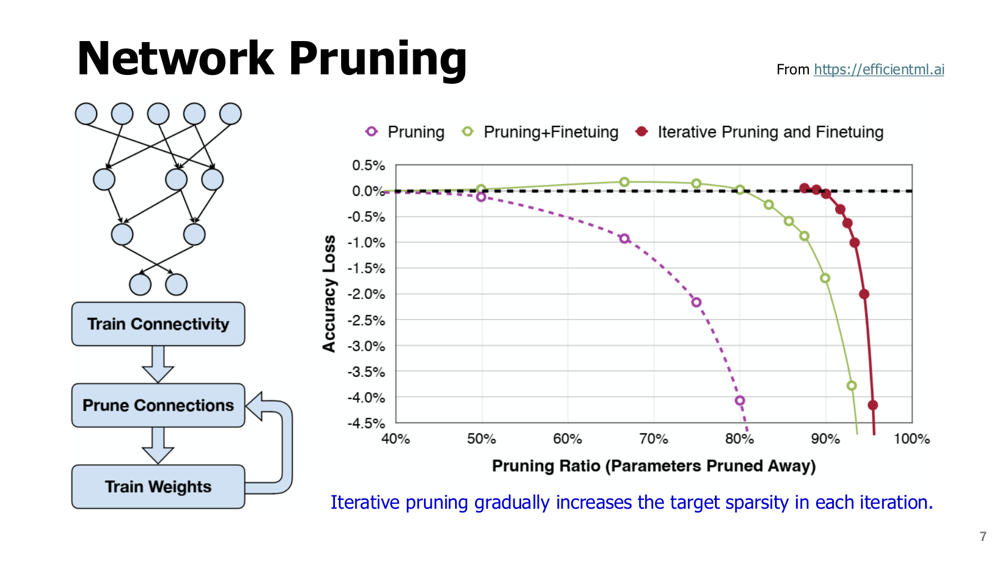
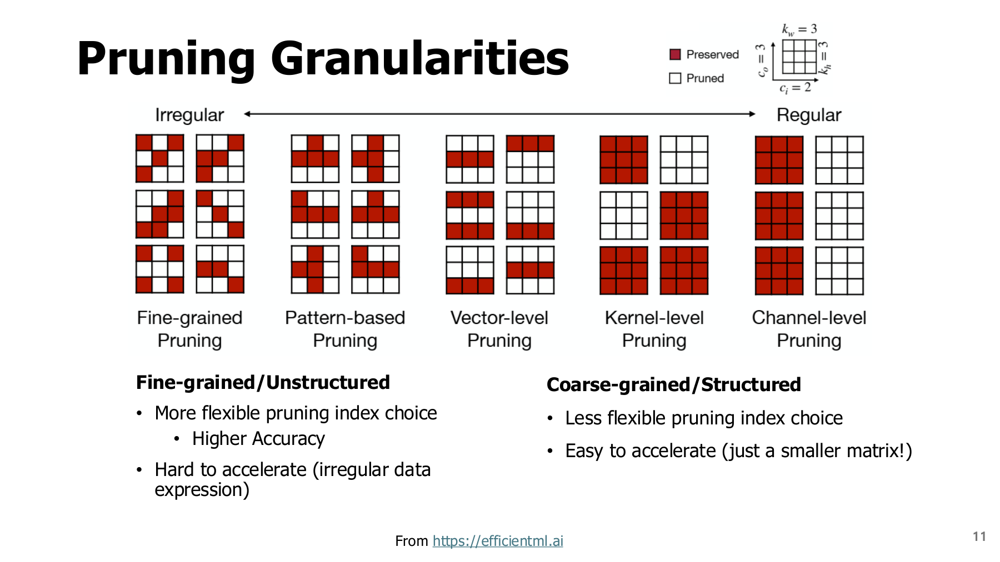
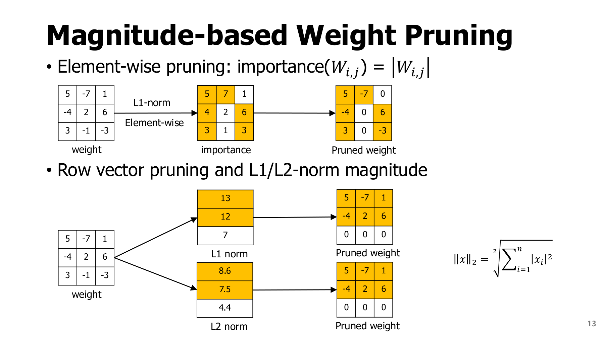
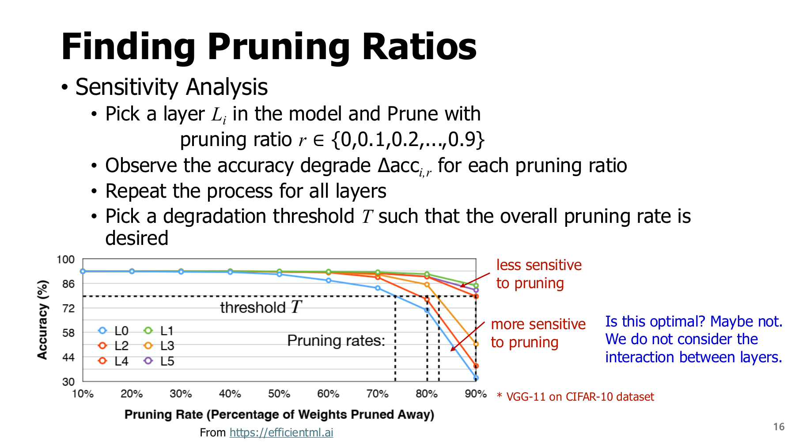

1. 가지치기: 무엇을 없애고 무엇을 보존할까?
원본 범위: p.3-16
학습 목표
- 무엇을 제거하는지와 얼마나 제거하는지 구분하기
- 작은 행렬에서 가지치기 결과 계산하기
- 가중치 수가 줄어도 실행 속도가 그대로일 수 있는 이유 설명하기
시작 전 준비
| 용어 | 뜻 |
|---|---|
| 행렬 | 숫자를 행과 열로 배열한 것 |
| 가중치 행렬 | 여러 입력과 출력 사이의 연결 강도를 모은 배열 |
| 채널 | 한 층에서 만들어지는 특징의 한 갈래 |
| 특징 맵(feature map) | 채널별로 계산한 공간 위치의 중간값 |
| 커널 | 여기서는 장치에서 연산을 실행하는 코드 단위 |
이 장에서는 모델 연결을 없애는 것과 연산 코드를 실제로 덜 실행하는 것을 구분한다.
1.1 가지치기와 희소성은 무엇인가? - p.3-7
가지치기(pruning)는 모델의 연결이나 계산 단위 중 일부를 제거하는 방법이다.
| 구분 | 의미 | 숫자 예시 |
|---|---|---|
| 희소성(sparsity) | 전체 값 중 0의 비율 | 100개 중 60개가 0 → 60% |
| 밀도(density) | 전체 값 중 0이 아닌 값의 비율 | 100개 중 40개 유지 → 40% |
| 제거 비율 | 이번 작업에서 제거한 비율 | 원래 있던 0은 새로 제거한 수에 포함하지 않음 |
원래 0이 있던 모델에서는 제거 비율과 최종 희소성이 다를 수 있다.
왜 제거할 수 있을까?
모든 연결이 예측에 같은 영향을 주지는 않는다. 충분한 연결을 두고 학습한 뒤, 영향이 적은 부분을 찾으면 더 작은 모델을 만들 여지가 있다.
판단 기준: 제거 후에도 필요한 예측 품질을 유지하는가?
기본 절차 — p.4-7
- 학습: 데이터로 원래 모델의 가중치를 정한다.
- 선택·제거: 중요도가 낮다고 판단한 연결을 0으로 만든다.
- 미세조정: 남은 가중치를 추가 학습해 품질 회복을 시도한다.
- 재평가: 품질과 실제 실행 비용을 다시 확인한다.
반복 가지치기: 제거와 회복을 여러 차례 수행하며 목표 비율에 접근한다. 한 번에 80%를 제거한 모델과 단계적으로 80%에 도달한 모델의 결과는 다를 수 있다.


그림 읽기
- 가로축: 제거한 파라미터의 비율. 오른쪽일수록 많이 제거한 상태다.
- 세로축: 정확도 변화. 아래로 내려갈수록 품질 손실이 크다.
- 보라색: 제거만 수행한 결과. 초록색: 미세조정 추가. 빨간색: 반복 제거·회복.
- 비교 질문: 같은 제거 비율에서 어떤 과정이 품질을 더 유지했는가?
곡선의 위치는 해당 실험 결과다. 반복 학습의 추가 비용과 모델별 차이도 함께 고려한다.
주의: p.6의 fine-tuning 학습률 1/100-1/10은 강의의 경험적 예시다. 모든 모델에 고정하는 규칙이 아니다. 미세조정에는 시간·메모리·학습 데이터가 필요하며 회복도 보장되지 않는다.
1.2 어떤 결정을 서로 구분해야 할까? - p.8-11
| 설계축 | 선택 예 | 실제로 정하는 것 |
|---|---|---|
| 제거 단위·패턴 | 개별 원소, 블록, 채널, N:M | 무엇을 하나의 제거 단위로 볼지 |
| 중요도 기준 | 절댓값, 벡터 norm, BN scale, 손실 근사 | 어느 단위를 먼저 제거할지 |
| 제거 비율 | layer별 20%, 50% 등 | 얼마나 제거할지 |
| 회복 과정 | 미세조정, 증류, 재구성 | 제거 후 생긴 오차를 어떻게 줄일지 |
이 네 축은 대체 관계가 아니다. 채널 단위 가지치기에도 중요도와 비율이 필요하고, 미세조정은 그 뒤에 결합할 수 있다.
제거 단위에 따른 차이
| 방식 | 무엇을 없애는가? | 실행 관점 |
|---|---|---|
| 비구조적(unstructured) | 흩어진 개별 가중치 | 행렬 모양이 남아 0도 계산할 수 있음 |
| 구조적(structured) | 채널·필터·행·블록 등의 묶음 | 실제 크기를 줄이면 작은 연산으로 바꿀 여지가 있음 |


그림 읽기
- 빨간 칸: 남긴 가중치. 흰 칸: 제거한 가중치.
- 왼쪽: 제거 위치를 자유롭게 고르는 방식.
- 오른쪽: 큰 묶음으로 제거해 규칙적인 모양을 만드는 방식.
- 핵심: 같은 개수를 없애도 남은 배치가 다르면 실행 효율이 달라진다.
출력 채널을 실제로 줄이면 다음 층의 입력 채널도 수정해야 한다. 두 경로를 더하는 residual 연결은 덧셈 양쪽의 모양을 맞춰야 한다.
파라미터 수·연산량·속도는 따로 확인한다 — p.8-9
- FC(완전연결) 층: 많은 가중치를 저장할 수 있다.
- 합성곱 층: 같은 필터를 여러 공간 위치에 반복 적용한다.
- MAC: 곱셈 결과를 누적하는 연산. 가중치 하나도 여러 번 사용되면 MAC은 여러 번 발생한다.
FC의 가중치를 많이 없애도 합성곱 연산이 남아 있다면 전체 연산량은 그만큼 줄지 않는다. 원문 표의 압축률을 실행 속도 향상률로 바꾸어 읽지 않는다.
1.3 가중치 크기로 고르기 - p.12-13
가중치 중요도(Weight Saliency)는 “이 연결을 없애면 모델이 얼마나 손해를 보는가?”를 판단하는 기준이다. 원래 손실이 얼마나 커지는지 직접 확인할 수도 있지만, 큰 모델의 모든 연결에 반복하기에는 비용이 크다. 그래서 가중치 크기, 손실 곡률, 실제 입력 활성값 등을 이용해 중요도를 근사한다. 중요도가 낮다는 판단은 선택한 기준과 데이터에 달려 있다.
크기(Magnitude) 기준은 그중 가장 단순한 방법으로, 가중치의 절댓값이 작을수록 먼저 제거한다. 부호가 음수여도 절댓값이 크면 작은 가중치가 아니다. 아래 예제는 크기 기준이 빠르고 간단한 이유와, 입력을 무시할 때 생기는 한계를 보여 준다.
- $W_{ij}$: i행 j열의 가중치
- $s_{ij}$: 그 가중치의 중요도 점수
- 절댓값: 부호를 제외한 크기.
|-7|=7이므로1보다 크다.
점수가 작다는 것은 이 기준에서의 판단이다. 실제 출력의 기여는 입력을 곱한 $w_i x_i$에 따라서도 달라진다.
선택을 따라가기 — p.12
| 단계 | 계산·해석 |
|---|---|
| 가중치 | [15, 0.2, -9] |
| 절댓값 | [15, 0.2, 9] |
| 제거 후보 | 절댓값이 가장 작은 0.2 |
| 한계 확인 | 그 위치의 입력이 1000이면 기여는 0.2×1000=200 |
결론: 작은 가중치라도 큰 입력을 자주 받으면 무시하기 어렵다. 따라서 magnitude는 중요도의 간단한 대용 기준이다. 3장에서는 제거로 생기는 손실 변화와 활성값을 반영해 이 판단을 보강한다.
아래 원문 그림은 원소별 선택과 행 전체 선택이 서로 다른 마스크를 만드는지 비교하며 읽는다. 위쪽은 개별 절댓값, 아래쪽은 행 norm을 사용한다.


원문 행렬을 텍스트로 쓰면 다음과 같다.
W = [[ 5, -7, 1],
[-4, 2, 6],
[ 3, -1, -3]]
- 원소 3개를 제거한다면 절댓값 1, 1, 2인 위치를 0으로 만들어
[[5,-7,0],[-4,0,6],[3,0,-3]]를 얻는다. 9개 중 3개이므로 희소성은 1/3이다. - 행 전체를 제거한다면 L1 norm은
[13,12,7], L2 norm은 $[\sqrt{75},\sqrt{56},\sqrt{19}]\approx[8.6603,7.4833,4.3589]$다. 둘 다 세 번째 행을 고른다. 이는 이 예제에서의 일치이며 모든 행렬에서 L1/L2 순위가 같은 것은 아니다.
L1 norm은 절댓값의 합, L2 norm은 제곱합의 제곱근이다. 동점 처리, layer 간 점수 정규화, 목표 개수의 반올림 방식도 구현에서 정해야 한다.
1.4 BN scale로 채널 고르기 - p.14
Batch Normalization(BN)은 통계로 입력을 정규화한 뒤 학습 가능한 scale과 shift를 적용한다.
식의 직관: 채널 값의 평균을 빼고 퍼짐의 크기에 맞춰 조정한 다음, 학습한 배율과 이동량을 적용한다. 평균은 값들의 중심, 분산은 그 중심에서 얼마나 흩어졌는지를 나타낸다.
| 기호 | 의미 |
|---|---|
| $x$ | 채널 입력 |
| $\mu$, $\sigma^2$ | 평균과 분산 |
| $\epsilon$ | 0으로 나누는 문제 등을 줄이는 작은 양수 |
| $\gamma$ | 정규화한 값에 곱하는 학습 가능한 scale |
| $\beta$ | 마지막에 더하는 학습 가능한 shift |
| $\lambda$ | scale을 작게 유도하는 규제의 강도 |
BN 기반 선택 절차
- 원래 손실에 $\lambda\sum_c|\gamma_c|$를 더해 작은 scale을 유도한다.
- 학습 후 $|\gamma_c|$가 작은 채널을 후보로 고른다.
- 연결된 가중치·특징 맵을 조정하고 미세조정한다.
- 최종 품질을 확인한다.
주의: $\gamma$가 작아도 shift인 $\beta$가 남는다. 채널 출력이 무조건 0이라고 할 수 없으며, 규제 강도를 높일수록 항상 좋은 것도 아니다.
1.5 layer별 제거 비율을 정하기 - p.15-16
민감도 분석(sensitivity analysis)은 특정 layer만 여러 비율로 제거한 뒤 품질 변화를 관찰하는 것이다. 예를 들어 같은 검증셋에서 layer A는 50% 제거해도 정확도 0.2%p 하락, B는 20%에서 2%p 하락한다면 B를 더 보수적으로 다루는 근거가 된다. 두 수치는 설명용 예시이며 원문 실험값이 아니다.
단위 읽기: %p는 퍼센트포인트다. 정확도 90%에서 88%로 낮아지면 2%p 하락이다.
민감도 분석 절차
- 원래 모델의 정확도를 측정한다.
- 한 층만 여러 비율로 제거해 본다.
- 허용 품질 하락폭 안에서 층별 비율을 정한다.
- 모든 층에 함께 적용한 뒤 다시 평가한다.


그림 읽기
- 가로축: 검사 중인 한 층의 제거 비율.
- 세로축: 모델 정확도.
- 곡선: 서로 다른 층을 각각 제거한 결과.
- 가로 임계선: 허용할 정확도 하한. 각 곡선과 만나는 위치가 후보 비율이다.
왜 마지막 재평가가 필요한가? 한 층씩 검사할 때는 나머지 층이 원래 상태다. 여러 층을 동시에 바꾸면 오차가 상호작용하므로 개별 결과의 합으로 전체 성능을 보장할 수 없다.
1.6 요약과 확인 질문
| 결정할 것 | 확인 질문 |
|---|---|
| 단위 | 원소를 지울까, 채널을 지울까? |
| 중요도 | 무엇부터 지울까? |
| 비율 | 얼마나 지울까? |
| 회복 | 품질 손실을 어떻게 줄일까? |
다음 장에서는 남은 값과 위치를 저장하고 실행하는 방법을 다룬다.
- 0인 원소가 60%인 행렬을 dense 행렬곱에 넣으면 60% 빨라지는가?
- 위 3×3 행렬에서 원소 3개 제거와 행 1개 제거는 같은 함수인가?
- 각 layer만 따로 검사해서 정한 비율을 모두 적용한 뒤 왜 재평가해야 하는가?
해설과 돌아갈 위치
- 보장되지 않는다. dense 커널은 원래 크기대로 계산할 수 있고 sparse 커널에도 인덱스·불균형 비용이 있다. 1.2와 다음 장 2.3으로 돌아간다.
- 둘 다 3개가 0이지만 위치가 다르다. 첫 방식은 각 행에 영향이 있고 두 번째는 세 번째 출력 경로를 통째로 없앤다. 1.3의 마스크를 비교한다.
- layer 간 오차가 누적·상호작용하고, 실제 채널 제거는 뒤 layer의 입력도 바꿀 수 있다. 1.5로 돌아간다.